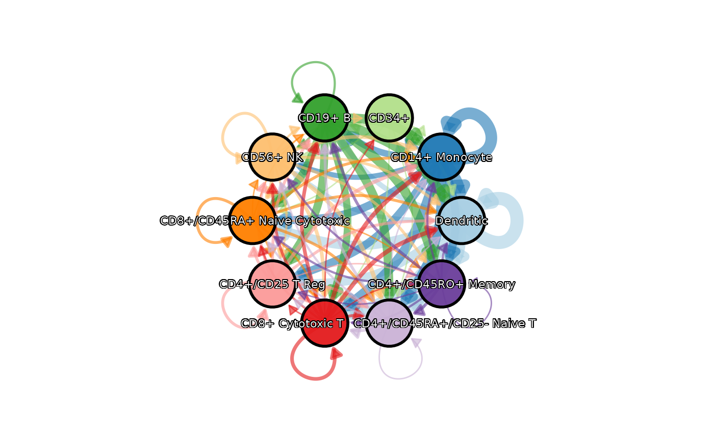
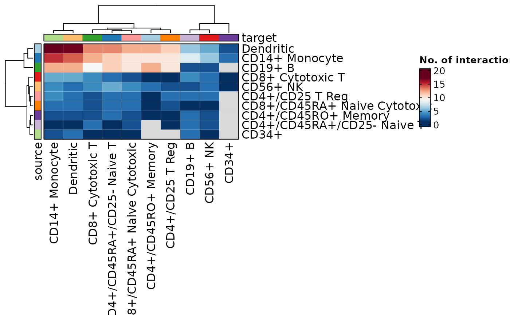
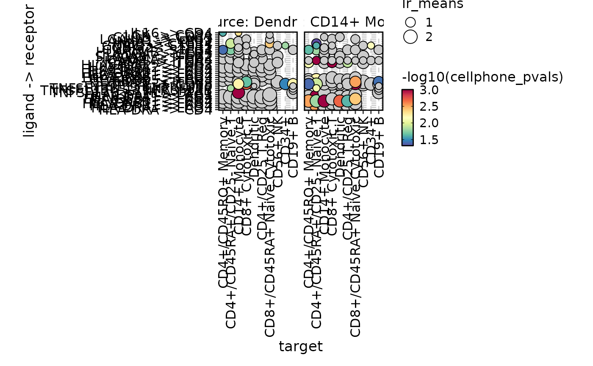
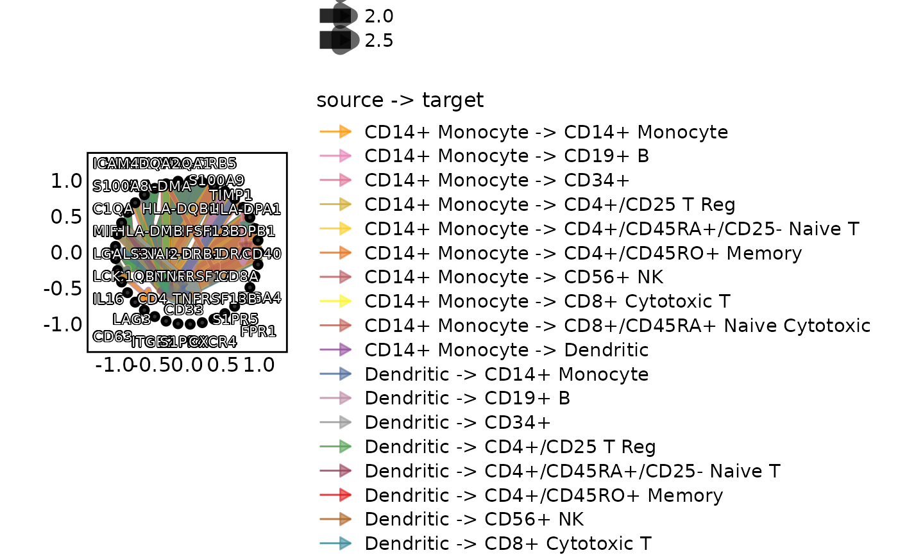
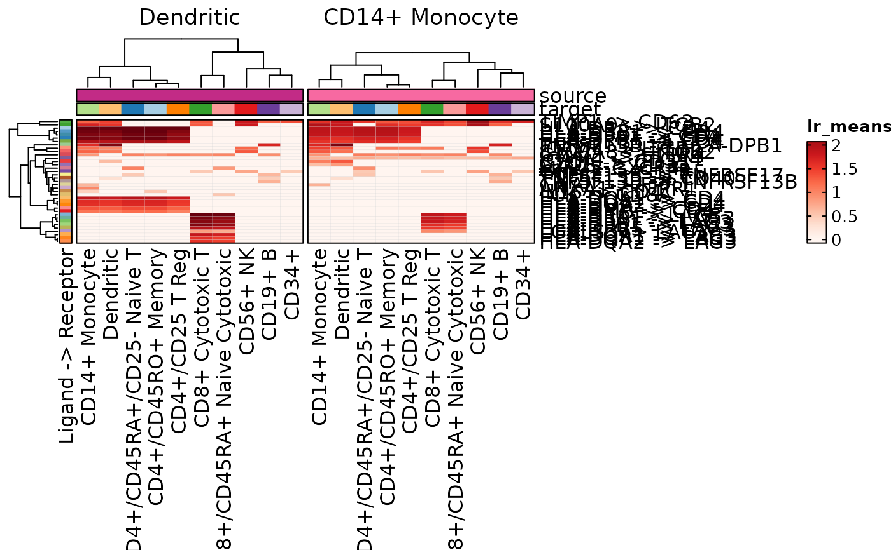
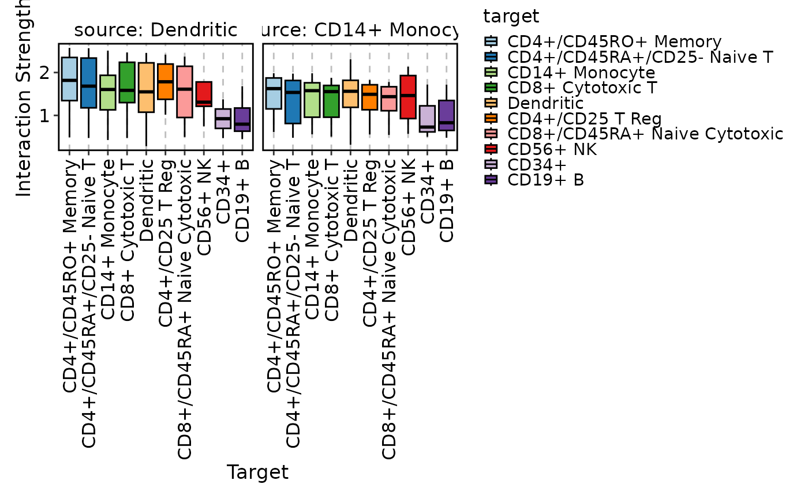
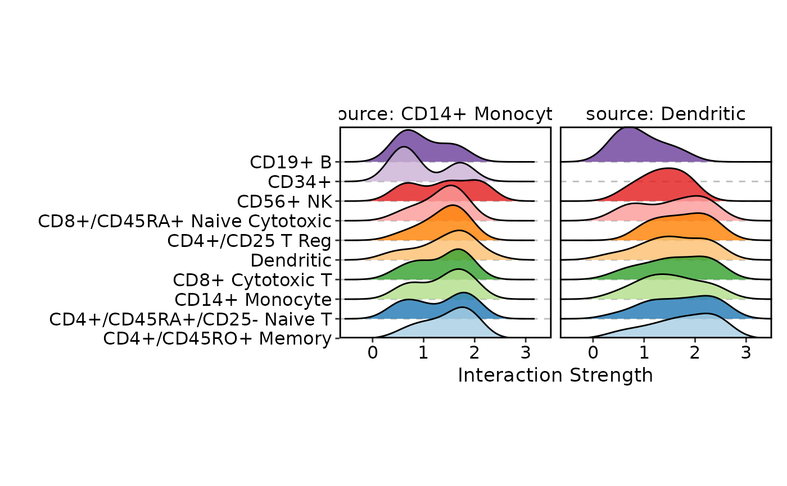

Plot the cell-cell communication. See also:
The review: https://www.sciencedirect.com/science/article/pii/S2452310021000081
The LIANA package: https://liana-py.readthedocs.io/en/latest/notebooks/basic_usage.html#Tileplot
The CCPlotR package: https://github.com/Sarah145/CCPlotR
Usage
CCCPlot(
data,
plot_type = c("dot", "network", "chord", "circos", "heatmap", "sankey", "alluvial",
"box", "violin", "ridge"),
method = c("aggregation", "interaction"),
magnitude = waiver(),
specificity = waiver(),
magnitude_agg = length,
magnitude_name = "No. of interactions",
meta_specificity = "sumlog",
split_by = NULL,
x_text_angle = 90,
link_curvature = 0.2,
link_alpha = 0.6,
facet_by = NULL,
show_row_names = TRUE,
show_column_names = TRUE,
...
)Arguments
- data
A data frame with the cell-cell communication data. A typical data frame should have the following columns:
sourceThe source cell type.targetThe target cell type.ligandThe ligand gene.receptorThe receptor gene.ligand_meansThe mean expression of the ligand gene per cell type.receptor_meansThe mean expression of the receptor gene per cell type.ligand_propsThe proportion of cells that express the entity.receptor_propsThe proportion of cells that express the entity.<magnitude>The magnitude of the communication.<specificity>The specificity of the communication. Depends on theplot_type, some columns are optional. But thesource,target,ligand,receptorand<magnitude>are required.
- plot_type
The type of plot to use. Default is "dot". Possible values are "network", "chord", "circos", "heatmap", "sankey", "alluvial", "dot", "box", "violin" and "ridge". For "box", "violin" and "ridge", the
methodshould be "interaction".network: A network plot with the source and target cells as the nodes and the communication as the edges.
chord: A chord plot with the source and target cells as the nodes and the communication as the chords.
circos: Alias of "chord".
heatmap: A heatmap plot with the source and target cells as the rows and columns.
sankey: A sankey plot with the source and target cells as the nodes and the communication as the flows.
alluvial: Alias of "sankey".
dot: A dot plot with the source and target cells as the nodes and the communication as the dots.
box: Box plots for source cell types. Each x is a target cell type and the values will be the interaction strengths of the ligand-receptor pairs.
violin: Violin plots for source cell types. Each x is a target cell type and the values will be the interaction strengths of the ligand-receptor pairs.
ridge: Ridge plots for source cell types. Each row is a target cell type and the values will be the interaction strengths of the ligand-receptor pairs.
- method
The method to determine the plot entities.
aggregation: Aggregate the ligand-receptor pairs interactions for each source-target pair. Only the source / target pairs will be plotted.
interaction: Plot the ligand-receptor pairs interactions directly. The ligand-receptor pairs will also be plotted.
- magnitude
The column name in the data to use as the magnitude of the communication. By default, the second last column will be used. See
li.mt.show_methods()for the available methods inLIANA. or https://liana-py.readthedocs.io/en/latest/notebooks/basic_usage.html#Tileplot- specificity
The column name in the data to use as the specificity of the communication. By default, the last column will be used. If the method doesn't have a specificity, set it to NULL.
- magnitude_agg
A function to aggregate the magnitude of the communication. Default is
length.- magnitude_name
The name of the magnitude in the plot. Default is "No. of interactions".
- meta_specificity
The method to calculate the specificity when there are multiple ligand-receptor pairs interactions. Default is "sumlog". It should be one of the methods in the
metappackage.- split_by
A character vector of column names to split the plots. Default is NULL.
- x_text_angle
The angle of the x-axis text. Default is 90. Only used when
plot_typeis "dot".- link_curvature
The curvature of the links. Default is 0.2. Only used when
plot_typeis "network".- link_alpha
The transparency of the links. Default is 0.6. Only used when
plot_typeis "network".- facet_by
A character vector of column names to facet the plots. Default is NULL. It should always be NULL.
- show_row_names
Whether to show the row names in the heatmap. Default is TRUE. Only used when
plot_typeis "heatmap".- show_column_names
Whether to show the column names in the heatmap. Default is TRUE. Only used when
plot_typeis "heatmap".- ...
Other arguments passed to the specific plot function.
For
Network, seeplotthis::Network().For
ChordPlot, seeplotthis::ChordPlot().For
Heatmap, seeplotthis::Heatmap().For
SankeyPlot, seeplotthis::SankeyPlot().For
DotPlot, seeplotthis::DotPlot().
Examples
# \donttest{
set.seed(8525)
data(cellphonedb_res)
CCCPlot(data = cellphonedb_res, plot_type = "network", legend.position = "none",
theme = "theme_blank", theme_args = list(add_coord = FALSE))

CCCPlot(cellphonedb_res, plot_type = "chord")
CCCPlot(cellphonedb_res, plot_type = "heatmap")

CCCPlot(cellphonedb_res, plot_type = "dot",
magnitude_agg = mean, magnitude_name = "Average Interaction Strength")
CCCPlot(cellphonedb_res, plot_type = "sankey")
#> Missing alluvia for some stratum combinations.
cellphonedb_res_sub <- cellphonedb_res[
cellphonedb_res$source %in% c("Dendritic", "CD14+ Monocyte"),]
CCCPlot(cellphonedb_res_sub, plot_type = "dot", method = "interaction")
#> Multiple columns are provided in 'y'. They will be concatenated into one column.

CCCPlot(cellphonedb_res_sub, plot_type = "network", method = "interaction",
node_size_by = 1)

CCCPlot(cellphonedb_res_sub, plot_type = "heatmap", method = "interaction",
palette = "Reds")

CCCPlot(cellphonedb_res_sub, plot_type = "box", method = "interaction")

CCCPlot(cellphonedb_res_sub, plot_type = "violin", method = "interaction",
add_box = TRUE)
CCCPlot(cellphonedb_res_sub, plot_type = "ridge", method = "interaction")
#> Picking joint bandwidth of 0.285
#> Picking joint bandwidth of 0.311
#> Picking joint bandwidth of 0.285
#> Picking joint bandwidth of 0.311

# }